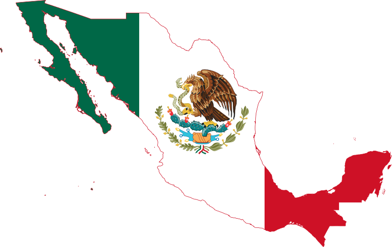

My name is Ivan David Ponce, and I’m from Mexico. I really enjoy dancing and cooking. When I dance, I feel free and helps me relieve stress. Cooking lets me share meals with those I love, like my family and friends.
Mexico
Mexico is a beautiful country with a lot of culture and history. There are colorful festivals, friendly people, and amazing food. I love our dishes like tacos and mole. Celebrations like Día de los Muertos are special because they bring everyone together to remember and honor loved ones. Being from Mexico makes me proud!
